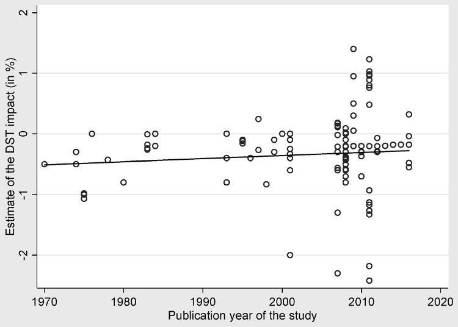
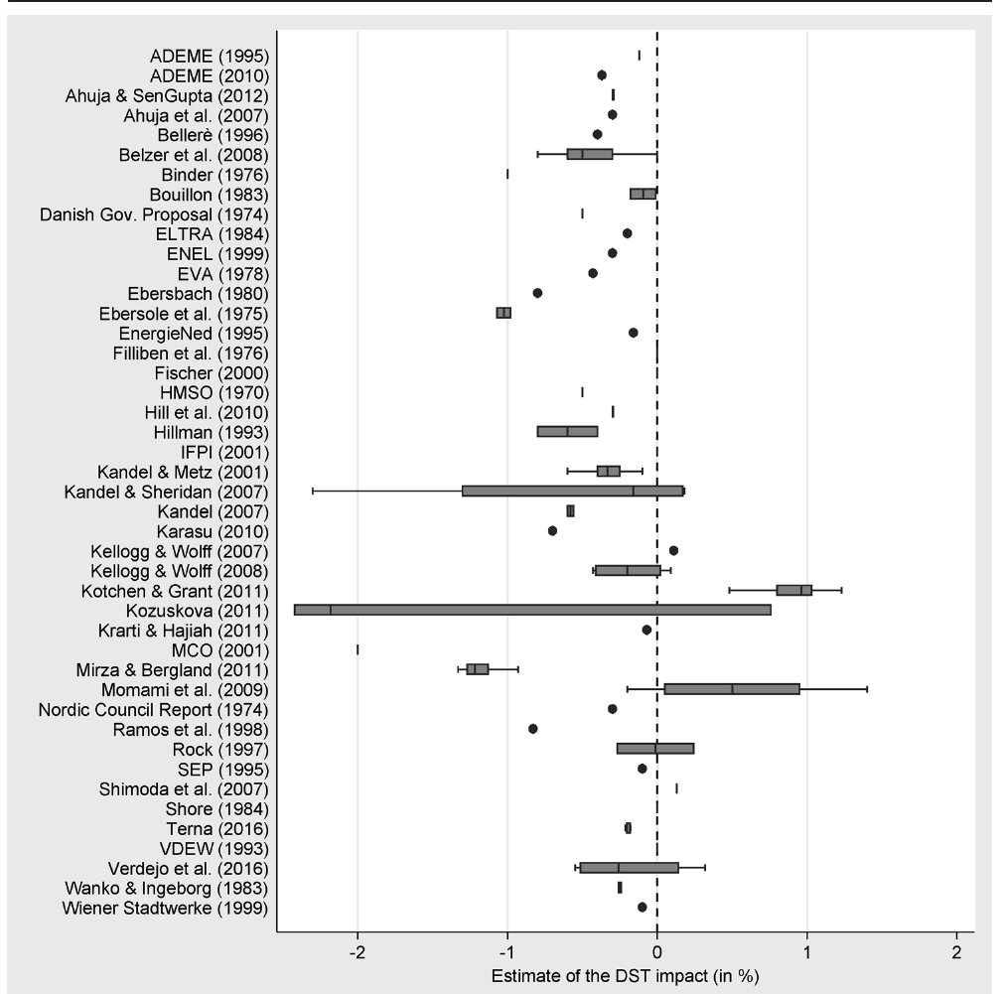
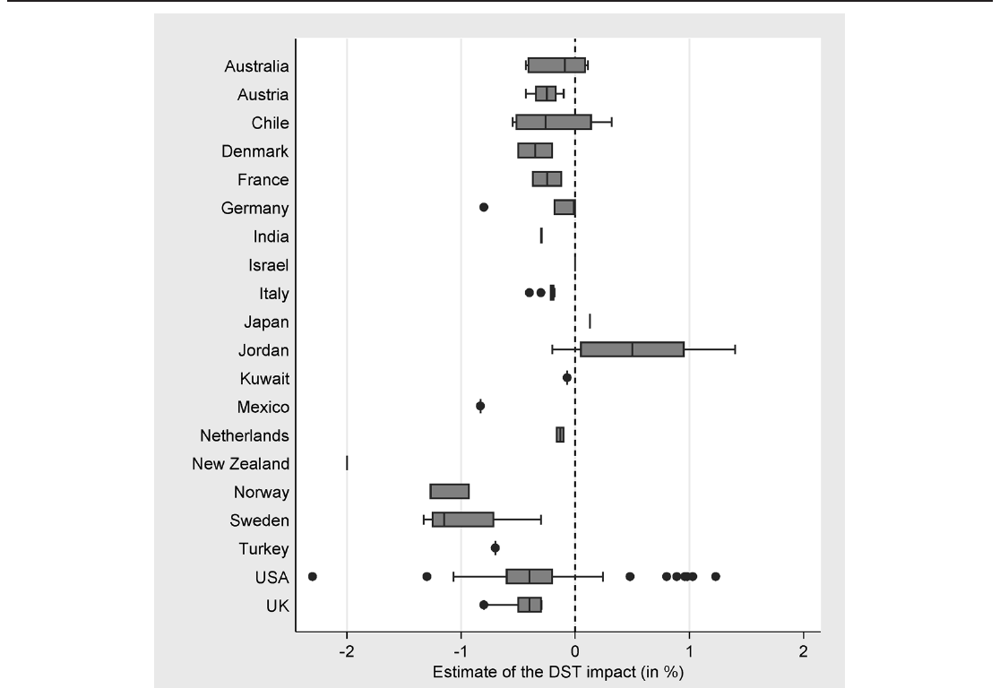
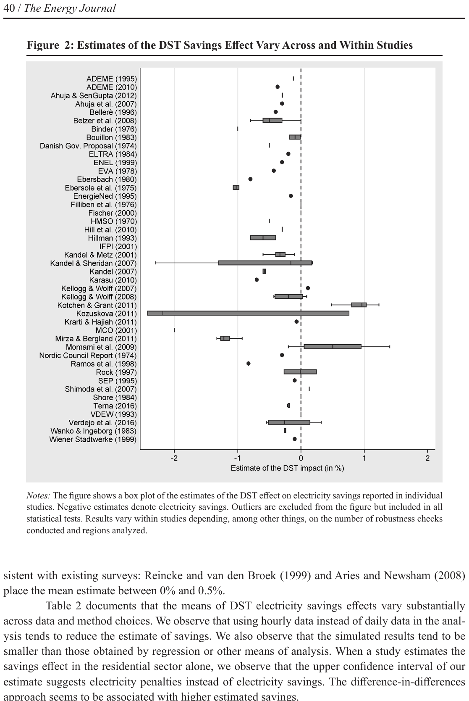
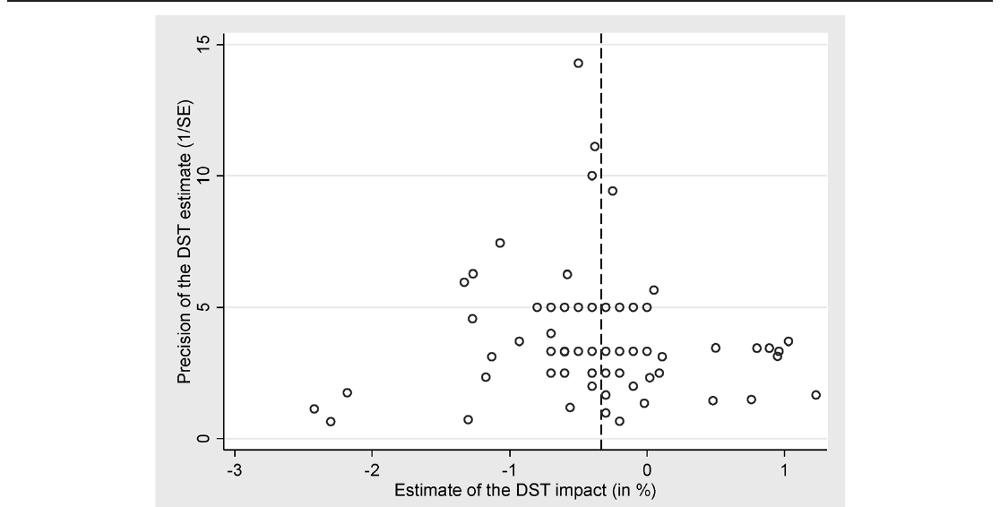
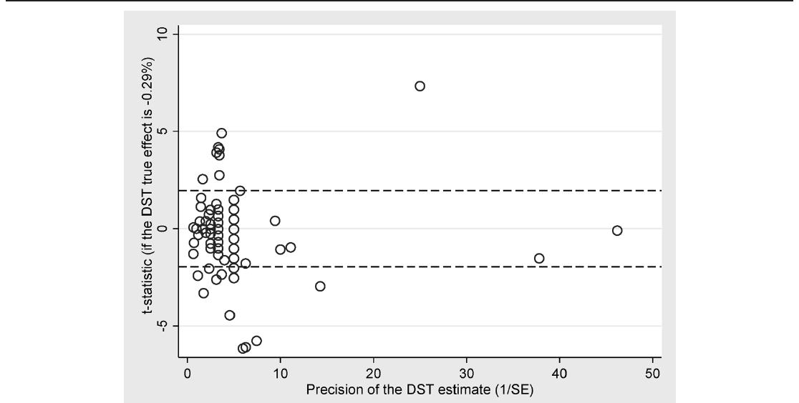
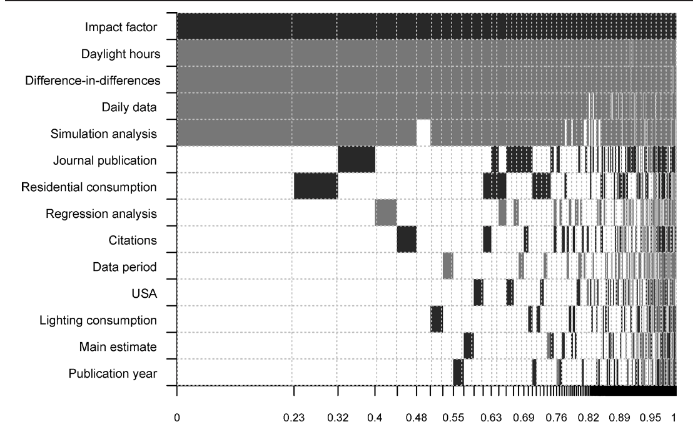
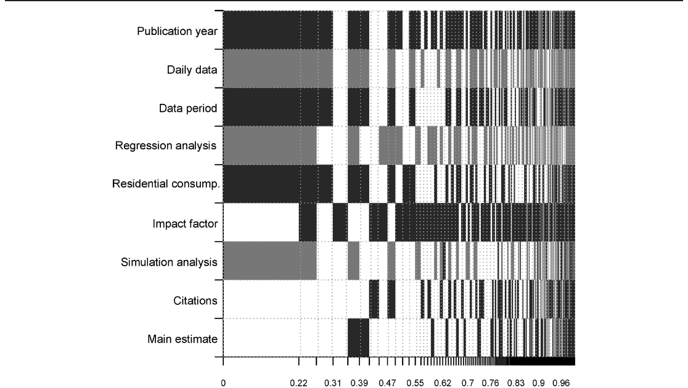

Does Daylight Saving Save Electricity? A Meta-Analysis
Tomas Havranek, Dominik Herman, and Zuzana Irsova (2018), "Does Daylight Saving Save Electricity? A Meta-Analysis." Energy Journal 39(2), 35-61. https://doi.org/10.5547/01956574.39.2.thav.
Tomas Havranek,* Dominik Herman,** and Zuzana Irsova***
* Czech National Bank and Charles University, Prague.
** Charles University, Prague.
*** Corresponding author. Charles University, Prague. E-mail: zuzana.irsova@ies-prague.org.
Abstract
The original rationale for adopting daylight saving time (DST) was energy savings. Modern research studies, however, question the magnitude and even direction of the effect of DST on electricity consumption. Representing the first meta-analysis in this literature, we collect 162 estimates from 44 studies and find that the mean reported estimate indicates slight electricity savings: 0.34% during the days when DST applies. The literature is not affected by publication bias, but the results vary systematically depending on the exact data and methodology applied. Using Bayesian model averaging we identify the most important factors driving the heterogeneity of the reported effects: data frequency, estimation technique (simulation vs. regression), and, importantly, the latitude of the country considered. Electricity savings are larger for countries farther away from the equator, while subtropical regions consume more electricity because of DST.
Keywords: Daylight saving time, Energy savings, Bayesian model averaging, Meta-analysis, Publication bias
1. INTRODUCTION
As of the year 2017, daylight saving time is used by 77 countries and regions with a combined population in excess of 1.5 billion, making DST one of the most widespread policies in the world. It is also one of the most controversial policies, with dozens of countries and regions having abandoned it in recent decades. While DST has many other effects, in this paper we focus on its impact on electricity consumption, which was originally the primary argument advanced in favor of the policy and for which abundant empirical evidence exists. Since the pioneering Ebersole (1974) report, many studies have estimated the effect of DST on electricity savings.
The two major surveys of the literature, Reincke and van den Broek (1999) and Aries and Newsham (2008), show that different researchers obtain substantially different results. One can find empirical evidence in support of electricity savings resulting from DST, just as one can find evidence of increased electricity demand associated with DST. For example, the most-cited empirical study, Kotchen and Grant (2011), concludes that, contrary to the policy's objective, DST increases electricity demand. (The result might be the reason that the study receives so many citations, although it was also published in a prestigious journal, The Review of Economics and Statistics.) The survey by Aries and Newsham (2008, p. 1864) concludes that "the existing knowledge about how DST affects electricity use is limited, incomplete, or contradictory." As documented by Figure 1, the estimates diverge over time instead of converging to a consensus number. In this paper we propose a systematic and quantitative synthesis of the literature that would allow researchers and the public to take stock of the work on this topic produced over the last four decades.

Notes: The figure depicts estimates of the effect of DST on electricity consumption reported in individual studies (negative estimates translate to electricity savings). The horizontal axis represents the year in which each study was published. Some studies report more estimates and results also vary within studies depending, among other things, on the number of robustness checks conducted and regions analyzed.
This study represents, to the best of our knowledge, the first meta-analysis that focuses on the impact of DST on electricity consumption. We collect 162 estimates from 44 studies, including research articles, government papers, and energy company reports. The literature implies that, on average, the savings from DST amount to 0.34% of total electricity consumption during the days when DST is applied. This mean estimate is consistent with the conclusions of previous (narrative) surveys: Reincke and van den Broek (1999) and Aries and Newsham (2008) place their best estimate of the effect between 0% and 0.5%. The simple average reported effect is, however, usually a biased estimate of the true effect in economics (Doucouliagos and Stanley, 2013): the distribution of the estimates is often truncated due to publication bias, and the size of the effect is typically driven by study design.
When researchers or journal editors treat statistically significant estimates or estimates consistent with the conventional view more favorably, the distribution of estimates in the literature becomes biased. Random sampling errors occasionally cause estimates to have the "wrong" sign, but suppressing these estimates on a global scale may seriously distort the mean reported effect. For example, Stanley (2005) shows that the price elasticity of water demand is exaggerated fourfold due to publication selection. Nevertheless, unlike most other fields of empirical economics, the DST literature does not exhibit this bias, as we show in the paper. Negative, insignificant, and positive results are treated in a similar way by researchers, editors, and referees. We find, however, that the design of the study has important and systematic effects on the results.
Belzer et al. (2008) illustrate how researchers can use different data sets and methods to estimate the DST effect. We explore this influence of data, method, and even publication characteristics on the estimated coefficients. Using Bayesian model averaging we address model uncertainty and find that, among the 14 explanatory variables we codify, several are particularly influential: the choice of the difference-in-differences approach to estimate savings (vs. simple regression, simulation, or extrapolation), the choice of data frequency, and the impact factor of the journal in which the study was published, which we employ as a proxy for unobserved quality aspects. Importantly, we also find that the estimated electricity savings increase with higher latitudes (which translates to more savings for countries farther away from the equator).
Our results suggest that the effect of latitude can not only offset the effect of various estimation methods but can also easily outweigh the mean estimated savings and imply increased electricity consumption due to DST for countries closer to the equator. The DST policy makes little sense when the amount of daylight does not vary substantially during the year, and in this case the policy constitutes a shock that may well have unintended consequences for electricity consumption. In theory, the relationship between latitude and electricity savings from DST should be concave because DST also makes little sense near the poles where the difference between winter and summer daylight hours is too large. The human population, however, is concentrated in the subtropical and temperate climate zones, and the estimates in our sample reflect countries and regions of the corresponding latitudes. The positive relationship between latitude and electricity savings can thus be regarded as a linear approximation of the underlying relationship.1
The remainder of the paper is organized as follows. Section 2 describes the data collection process and the basic properties of the data set. Section 3 tests for publication selection bias in the literature. Section 4 explores country and method heterogeneity in the estimated DST effects and constructs best practice estimates for different countries. Section 5 presents robustness checks. Section 6 concludes the paper. A technical appendix at meta-analysis.cz/dst provides the data and code that will allow other researchers to replicate our analysis, an online appendix at www.iaee.org provides additional robustness checks.
2. DATA
Studies estimating the electricity consumption effect of a change from standard time to daylight saving time typically employ econometric analysis. In general, the authors of the primary studies estimate the following model:
where Consumption is the average electricity consumption during time t for a given hour, day, and year. The variable Treatment effect is a dummy variable for a selected treatment group and usually equals 1 for all hours when daylight saving time applies. Controls are explanatory variables that reflect seasonality and holidays, weather (precipitation, humidity, temperature, wind, and pressure), the intensity of sunlight, heterogeneity among consumption units, and other specific effects such as economic activity or oil prices, possibly including interaction terms and lags. The error term is denoted by .
From the studies reporting the DST effect we collect the treatment coefficient DST from (1). This coefficient represents the effect of daylight saving time on electricity consumption, or the difference in electricity consumption for a particular time period between the treatment group and the control group. These groups might be defined differently, for example as the period before the start and end of DST versus the period after the start and end of DST, the period when DST is not observed versus the period when DST is in place, the period when DST is observed versus the period to which DST is extended, or the period of midday and midnight hours versus the period of morning and evening hours. Multiple studies examine the pattern in electricity use before and after the spring and fall time change (for example, Kandel and Metz, 2001). Other studies, such as Mirza and Bergland (2011) and Kotchen and Grant (2011), examine the differences in consumption for hours unaffected and affected by the DST policy. Belzer et al. (2008) examines the impact of an extended DST policy.
Apart from econometric analysis, researchers can use simulation techniques to estimate the effect of DST on electricity consumption. Here the authors usually construct a model of electricity flows within different representative buildings and attempt to extrapolate this model to the country level. Such an approach entails multiple assumptions and simplifications, and it is thus more challenging to incorporate it into the meta-analysis framework. Despite the difficulty, we include these estimates in our analysis following the approach of Havranek et al. (2015b), who apply meta-analysis to simulation-based estimates of the social cost of carbon and show substantial publication bias in the literature.
Some studies report estimates incomparable with the rest of the literature. Our criteria for including studies in the meta-analysis are that 1) the study reports the effect of a change from standard time to daylight saving time (the effect of a one-hour clock shift during summer months), 2) the study reports the estimate in a way that enables us to extract an estimate in percent per day for each day the DST policy is implemented, and 3) the study focuses on electricity consumption (there are few estimates for other energy sources). To avoid comparing apples to oranges, we have to exclude several studies or individual estimates within studies. For example, Littlefair (1990), Crowley et al. (2014), Fong et al. (2007), and Rock (1997) report the effect of double DST; Kotchen and Grant (2011) report several estimates of the effect of a change from DST to standard time. Some studies only report lighting electricity savings, such as Fong et al. (2007) or Rajaram and Rawal (2011); Pout (2006) does not include electricity use for lighting in her analysis. Other studies (for example, Innanen and Innanen, 1978; Basconi, 2007; Sarwar et al., 2010; Pellen, 2014) report DST savings in such detail or manner that we were unable to recalculate them to be comparable with the rest of the sample.
Our final data set comprises 162 estimates taken from 44 independent studies reported in Table 1. We take advantage of the previous literature surveys on the electricity savings from DST by Reincke and van den Broek (1999) and Aries and Newsham (2008), which identify the major studies on the DST effect published prior to 2008. Additionally, we search Google Scholar for studies published thereafter; the search query is available in the technical appendix at meta-analysis.cz/dst. We identify 34 primary sources, i.e., studies directly estimating the DST effect (either as a treatment coefficient DST from (1) in the regression framework or as a result of simulation or extrapolation) and one secondary source, Reincke and van den Broek (1999), who report the results of 8 independent unpublished studies with DST estimates collected from interviews with public or private energy companies. We also inspect the references of all the studies in our sample published after 2008 to determine whether we missed papers. We add the last study on April 30, 2016.
We collect all the estimates reported in the studies. Therefore, we have an unbalanced panel data set, since different studies provide a different number of estimates. Some researchers conducting meta-analysis prefer to collect only one representative estimate from each study, but we follow Stanley (2001, p. 135), who suggests that it is "better err on the side of inclusion." Figure 2 shows that there is substantial heterogeneity in the estimates between and within studies, which might stem especially from the differences in methods and data. Moreover, Figure 3 shows the heterogeneity of estimates between different countries. It follows that it is important to control for the variations in the design of the study. Thus, we collect 16 aspects of study design for all estimates (details can be found in Table 4 of Section 4). The final data set is available online at meta-analysis.cz/dst.
| Independent studies: | ||
|---|---|---|
| ADEME (2010) | Hill et al. (2010) | Krarti and Hajiah (2011) |
| Ahuja and SenGupta (2012) | Hillman (1993) | Mirza and Bergland (2011) |
| Ahuja et al. (2007) | HMSO (1970) | MCO (2001) |
| Belzer et al. (2008) | IFPI (2001) | Momani et al. (2009) |
| Bellere (1996) | Kandel (2007) | Nordic Council (1974) |
| Binder (1976) | Kandel and Metz (2001) | Ramos and Diaz (1999) |
| Bouillon (1983) | Kandel and Sheridan (2007) | Rock (1997) |
| Danish Government Report (1974) | Karasu (2010) | Shimoda et al. (2007) |
| Ebersbach and Schaefer (1980) | Kellogg and Wolff (2007) | Shore (1984) |
| Ebersole et al. (1975) | Kellogg and Wolff (2008) | Terna (2016) |
| Filliben et al. (1976) | Kotchen and Grant (2011) | Verdejo et al. (2016) |
| Fischer (2000) | Kozuskova (2011) | Wanko and Ingeborg (1983) |
| Independent estimates from Reincke and van den Broek (1999): | ||
| ADEME (1995) | EnergieNed (1995) | VDEW (1993) |
| ELTRA (1984) | EVA (1978) | Wiener Stadtwerke (1999) |
| ENEL (1999) | SEP (1995) |
| DST est. by group | No. of observations | Unweighted Mean | Unweighted 95% conf. int. | Weighted Mean | Weighted 95% conf. int. | ||
|---|---|---|---|---|---|---|---|
| Data characteristics | |||||||
| Hourly data | 139 | -0.361 | -0.428 | -0.295 | -0.335 | -0.412 | -0.258 |
| Daily data | 15 | -0.687 | -1.220 | -0.155 | -0.654 | -1.099 | -0.209 |
| Main estimate | 67 | -0.250 | -0.410 | -0.091 | -0.338 | -0.475 | -0.202 |
| Europe | 43 | -0.474 | -0.651 | -0.297 | -0.386 | -0.527 | -0.245 |
| USA | 94 | -0.341 | -0.441 | -0.241 | -0.307 | -0.436 | -0.178 |
| Design of the analysis | |||||||
| Regression analysis | 117 | -0.395 | -0.495 | -0.295 | -0.418 | -0.544 | -0.293 |
| Simulation analysis | 21 | -0.241 | -0.408 | -0.073 | -0.259 | -0.395 | -0.123 |
| Other analysis | 24 | -0.120 | -0.384 | 0.144 | -0.320 | -0.550 | -0.091 |
| Residential consumption | 17 | 0.219 | -0.132 | 0.570 | -0.117 | -0.417 | 0.184 |
| Commercial consumption | 145 | -0.399 | -0.480 | -0.319 | -0.382 | -0.471 | -0.293 |
| Lighting consumption | 7 | -0.337 | -0.621 | -0.053 | -0.304 | -0.586 | -0.021 |
| Difference-in-differences | 94 | -0.407 | -0.520 | -0.294 | -0.449 | -0.619 | -0.279 |
| Publication characteristics | |||||||
| Journal publication | 41 | -0.026 | -0.250 | 0.199 | -0.121 | -0.284 | 0.043 |
| Unrefereed publication | 121 | -0.439 | -0.517 | -0.361 | -0.446 | -0.544 | -0.348 |
| Observations with SE | 101 | -0.402 | -0.518 | -0.286 | -0.411 | -0.577 | -0.244 |
| All observations | 162 | -0.334 | -0.419 | -0.250 | -0.343 | -0.429 | -0.257 |
Notes: The table presents mean estimates of the DST effect on electricity consumption (in %) for selected groups of data, method, and publication characteristics (see details in Table 4). On the right-hand side of the table the DST estimates are weighted by the inverse of the number of estimates reported per study. SE = standard error.
Table 2 reports the mean of the DST savings' estimates for different groups of study design characteristics. On the left-hand side we report simple averages; on the right-hand side the averages are weighted by the inverse of the number of observations reported per study. This type of weighting does not allow large studies to dominate the mean. Assigning each study the same weight yields an overall mean estimate of , which suggests electricity savings of 0.34 percent of total electricity consumption during the days when the daylight saving policy is applied. The 95% confidence interval of indicates considerable uncertainty around the mean. This finding is consistent with existing surveys: Reincke and van den Broek (1999) and Aries and Newsham (2008) place the mean estimate between 0% and 0.5%.

Notes: The figure shows a box plot of the estimates of the DST effect on electricity savings reported in individual studies. Negative estimates denote electricity savings. Outliers are excluded from the figure but included in all statistical tests. Results vary within studies depending, among other things, on the number of robustness checks conducted and regions analyzed.
Table 2 documents that the means of DST electricity savings effects vary substantially across data and method choices. We observe that using hourly data instead of daily data in the analysis tends to reduce the estimate of savings. We also observe that the simulated results tend to be smaller than those obtained by regression or other means of analysis. When a study estimates the savings effect in the residential sector alone, we observe that the upper confidence interval of our estimate suggests electricity penalties instead of electricity savings. The difference-in-differences approach seems to be associated with higher estimated savings.

Notes: The figure shows a box plot of the estimates of the DST effect on electricity savings reported for different countries. Negative estimates denote electricity savings. Outliers are excluded from the figure but included in all statistical tests. Results vary within studies depending, among other things, on the number of robustness checks conducted and regions analyzed.

Notes: The figure depicts the Epanechnikov kernel density of the DST effect estimates. The dashed curve denotes the normal distribution density, the solid vertical line denotes sample mean of the DST estimate, and the dotted vertical line denotes the mean of the DST estimates coming from journal publications.
Figure 4 depicts the distribution of the estimates of DST savings. The distribution is approximately symmetrical, and the mean estimate of is very close to the median estimate of , suggesting that there are not many outlying observations; thus, we do not need to exclude any estimates from our analysis. From Table 2 we see that the estimates that the authors prefer tend to be close to the average (when we assign each study the same weight). Nevertheless, studies in peer-reviewed journals appear to publish smaller estimates (see Table 2), which might indicate that factors other than the methodological reasons we can directly observe are responsible for the conservative estimates—it is an indication of potential publication selection.
3. Publication Bias
The preference of authors and editors for a certain magnitude or statistical significance of an estimate is a common phenomenon in the economics literature (Doucouliagos and Stanley, 2013; Havranek and Irsova, 2012). The literature on the effects of DST on electricity consumption is unique in the character of publication outlets: many of the estimates come from the reports of government or electricity companies. These institutions may have different reasons to prefer higher or lower estimates; there is, however, little reason for the authors from research institutes to succumb to such bias. Statistically insignificant estimates, in any case, might be more easily overlooked, leading to the so called file-drawer problem. Some cases of publication bias have been previously documented even in the field of energy economics (for example, Havranek et al., 2012; Reckova and Irsova, 2015; Havranek and Kokes, 2015; Havranek et al., 2015b).
The so-called funnel plot is one of the most common tools used to detect publication bias. It is a scatter diagram with the estimate of the effect on the horizontal axis and the precision of the estimate (the inverse of the standard error) on the vertical axis (see Stanley, 2005). For the majority of the estimates we consider, the authors report t-statistics and, therefore, assume the estimated coefficient and its standard error to be independent of one another.2 This property implies there should be no relationship between an estimate and its standard error. Thus, regardless of the magnitude of the true effect, the estimates in the plot should vary randomly and symmetrically around the true effect. With decreasing precision, the estimates become more dispersed, thus creating an inverted funnel.
From Figure 5 we conclude that there is little evidence of publication bias in the literature on DST electricity savings: when selection process is related to the magnitude of the effect, the funnel plot becomes asymmetrical; when the selection process favors statistical significance, the funnel becomes hollow and wide. We observe that Figure 5 does not exhibit either of these properties: the funnel is not hollow and is relatively symmetrical. Nevertheless, the funnel plot is only a simple visual test, and the dispersion of the estimates might suggest the presence of heterogeneity; therefore, we still need more rigorous tests to support our claim that there is no bias present in the literature.
As we have noted, in the absence of publication bias the estimates of DST savings and their standard errors should be uncorrelated (Stanley, 2005):
where and are the -th estimates of the effect of DST on electricity savings and its standard error reported in the -th study and is the error term. represents the true effect beyond potential publication bias captured by . If there were no publication bias present in our sample, would equal zero. In Table 3 we show that various versions of this test corroborate our conclusion of insignificant publication bias in the DST literature.

Notes: The figure depicts a funnel plot of the estimates of the DST effect. In the absence of publication bias, the funnel should be symmetrical around the most precise estimates of the DST effect on electricity savings. The dashed vertical line denotes the mean of the estimates. Outliers are excluded from the figure but included in all statistical tests.
| OLS | FE | BE | Country | ME | IV | |
|---|---|---|---|---|---|---|
| SE (publication bias) | -0.410 | -1.217 | -0.410 | -0.496 | -0.449 | 0.226 |
| (0.265) | (0.790) | (0.757) | (0.805) | (0.688) | (1.088) | |
| Constant (true effect) | -0.293*** | -0.222*** | -0.294*** | -0.278*** | -0.291*** | -0.445* |
| (0.000778) | (0.0700) | (0.00812) | (0.0459) | (0.00731) | (0.243) | |
| Observations | 101 | 101 | 101 | 101 | 101 | 90 |
The table presents the results of a regression , where and are -th estimate of the effect of DST on electricity savings and its standard error reported in the -th study. The model is estimated by weighted least squares with the inverse of the reported estimate's standard error taken as the weight. OLS = ordinary least squares, FE = study-level fixed effects, BE = study-level between effects, Country = country-level fixed effects, ME = study-level mixed effects, and IV = instrumental variable estimation, where the instrument for the standard error is the number of observations (if the study is based on regression analysis). Standard errors in parentheses are clustered at the study and country level (two-way clustering follows Cameron et al., 2011). *, **, ***.
The first column of Table 3 presents the baseline model of the funnel asymmetry test from (2). The coefficient , estimated by OLS, is not statistically significant (p-value = 0.12), and the constant places the true effect of daylight savings at approximately −0.29%. In the second column we add study-level fixed effects to the baseline specification. Using within-study variation for identification only marginally decreases the true effect, as does using within-country variation in the fourth column. The estimated bias becomes even less significant in other specifications: the model in the third column uses between-study variation and provides nearly the same mean effect as our baseline model. The mixed effects model in the fifth column is convenient for our unbalanced panel, since it employs restricted maximum likelihood and thus essentially assigns each study the same weight; the results are again similar to the baseline case. In the last column, we use the number of observations as an instrument for the standard error. The instrumental variable estimation is naturally less precise, but the result complies with the rest of the analysis: there is no publication bias present in the literature on electricity savings from daylight saving time. Absence of publication bias is rare in economics, but is also reported, for example, by Havranek and Irsova (2017) on the impact of borders on trade.

Notes: The horizontal black lines form the boundary of the (−1.96, 1.96) interval, which should not be surpassed in more than 95% of cases if there is no publication bias related to statistical significance and no heterogeneity. Outliers are excluded from the figure but included in all statistical tests.
As a complementary robustness check we depict the Galbraith plot (Galbraith, 1988), which specifically concentrates on the likelihood of reporting significant results. It is a funnel plot rotated 90 degrees and adjusted to remove heteroskedasticity (Stanley, 2005). We follow Havranek (2010) to define the adjusted t-statistics :
where represents the true effect estimated by the funnel asymmetry test and represents the i-th estimate of the daylight saving effect with as the corresponding standard error reported in the j-th study. For , we employ the baseline true effect from the first column of Table 3, −0.293, and plot the final statistics in Figure 6. If there is no systematic relationship between the effect and the precision, the observations should be randomly distributed around zero and the computed t-statistic should not be outside the interval (−1.96, 1.96) in more than 5% of cases. Our results indicate that nearly 24% of the estimates would be significant if the true effect were 0.293%. Such a result could create some formal grounds for the presence of publication bias related to the significance of estimates. Nevertheless, Figure 6 merely shows the presence of excess variation since the extreme values of t-statistics, on average, offset one another (Stanley, 2005), and therefore the mean effect is not biased. Moreover, the value of the true effect in Table 3 also needs to be challenged. There could be possible dependencies in study design and country heterogeneity that affect our previous estimates, and we will address these issues in the next section.
4. HETEROGENEITY OF DST ESTIMATES
4.1. Sources of Heterogeneity
We have seen from Figure 2 and Figure 3 that the estimates of the DST effect vary considerably, but we have not been able to explain the variance by sampling error and selective reporting. There is, however, another type of variation that might have a systematic influence on the estimated effects of DST. Aries and Newsham (2008) note that different studies estimate the DST effect using different data sets and methods. We will attempt to explain these variations using meta-regression analysis (as in Havranek and Irsova, 2011, who show how broadly estimates of an economic effect can vary across methods and countries). Since we do not observe publication bias in our sample, we remove the standard error from (2) and replace it with explanatory variables related to data and methodology. In so doing, we eliminate the apparent heteroskedasticity affecting the equation and control for heterogeneity among the estimates.
The explanatory variables capturing the variation in data and methodology are listed in Table 4; the table provides the definition of these variables and their summary statistics. The last column of the table presents the mean of the variables weighted by the inverse of the number of observations extracted from a study. We divide the variables into three groups. First, we collect information on data characteristics reflecting the data set and geographical specifics. Second, we collect information on the design of the analysis to capture methodological differences. Third, we collect information on publication characteristics, such as the journal impact factor. Our intention here is not to provide an exhaustive survey of the methods used in the DST literature but to identify the main reasons for the heterogeneity affecting the estimates.
Data characteristics
We consider the number of years examined in a study as a potentially useful explanatory variable: it might show that savings become more apparent in the long run when firms and households become better adapted to the policy. We also control for what the authors find to be their own preferred estimate in a particular study, which might indicate whether their own best-practice estimate is systematically different from the rest of the reported results. Another source of heterogeneity could be the granularity of the data: the information in daily data is less detailed than the information in hourly data, for which researchers directly observe changes in consumption during the morning and evening hours. We capture the country-specific differences by including the variable for the duration of sunlight. Specifically, we identify the average coordinates of the place, which relates either to the country or the city for which the daylight savings effects were estimated. For this geographical centroid, we identify the longest day of 2016 and its respective number of sunlight hours. We also include dummy variables for the United States and European countries.
Design of the analysis
DST estimates come either as a result of econometric analysis, simulation, or another type of analysis such as extrapolation or comparison. Among the econometric analyses, which generate more than 70% of our estimates, we observe frequent use of the difference-in-differences technique. The difference-in-differences approach accounts for differences between a control group (a time period that should not be affected by DST) and a treatment group (a time period that should be affected by DST). The set of other moderator variables included in the regression analysis also differs, as does the functional form. In most cases, a log-level model is employed to obtain the difference-in-differences estimate; nevertheless, for example, Shore (1984), Basconi (2007), and Kandel and Sheridan (2007) employ a level-level model directly examining the magnitudes of electricity consumption only (the elasticity is then computed using sample means). The level-level model is, however, scarce in our data set, and therefore, we do not add a corresponding dummy since it would display very little variation.
| Variable | Description | Mean | SD | WM |
|---|---|---|---|---|
| Daylight savings | The estimate of the impact of daylight saving time (DST) on electricity consumption in % per day of DST. | -0.334 | 0.547 | -0.343 |
| SE | The estimated standard error of DST savings. | 0.339 | 0.266 | 0.400 |
| Data characteristics | ||||
| Data period | The number of years used in the estimation. | 2.30 | 1.72 | 2.12 |
| Main estimate | = 1 if the estimate is preferred by the authors of the study. | 0.41 | 0.49 | 0.79 |
| Hourly data | = 1 if the data are examined on hourly or higher than hourly granularity. | 0.09 | 0.29 | 0.14 |
| Daily data | = 1 if the data are examined on a daily basis. | 0.09 | 0.29 | 0.14 |
| Daylight hours | Average time between sunrise and sunset on the longest day for the country or region under examination (Source: U.S. Naval Observatory Astronomical Applications Department). | 15.19 | 1.26 | 15.57 |
| Europe | = 1 if European countries are examined. | 0.27 | 0.44 | 0.52 |
| USA | = 1 if US data are examined. | 0.58 | 0.50 | 0.23 |
| Design of the analysis | ||||
| Regression analysis | = 1 if the primary study is based on regression analysis. | 0.72 | 0.45 | 0.39 |
| Simulation analysis | = 1 if the study is based on simulation. | 0.13 | 0.34 | 0.26 |
| Difference-in-diff. | = 1 if the difference-in-differences approach is employed. | 0.58 | 0.50 | 0.21 |
| Residential cons. | = 1 if only residential consumption is examined. | 0.10 | 0.31 | 0.15 |
| Lighting cons. | = 1 if total electricity savings are reported as a result of lighting reduction. | 0.04 | 0.20 | 0.13 |
| Publication characteristics | ||||
| Publication year | The publication year of the study (base = 1970). | 34.8 | 9.5 | 27.1 |
| Journal article | = 1 if the study was published in a peer-reviewed journal. | 0.25 | 0.44 | 0.32 |
| Impact factor | The recursive RePEc impact factor of the outlet. | 0.07 | 0.26 | 0.05 |
| Citations | The logarithm of the total number of citations of the study in Google Scholar. | 1.91 | 0.94 | 1.60 |
Notes: SD = standard deviation. WM = mean weighted by the inverse of the number of observations reported per study. All variables except for citations and the impact factor are collected from studies estimating the DST effect (the search for studies was terminated on April 30, 2016). Citations are collected from Google Scholar and the impact factor from RePEc. The data set is available at meta-analysis.cz/dst.
Nearly 30% of our estimates come from a type of analysis other than regression. Typically, these estimates are produced by simulation or by more or less sophisticated extrapolation. The simulations vary in their specification; moreover, the specification is not always reported in detail. Assumptions of the simulations are derived either from regression analysis, simple historical data analysis, or survey findings. The control variables are then similar to those specified in regression analysis with the exception that buildings and households are modeled in much greater detail. Therefore, the obvious benefit of simulation is that it is able to investigate the electricity consumption patterns in greater depth; however, researchers must be more confident in the correctness of the model specification. Extrapolation is usually based on shifts in the daily load curves. In comparison with the previous approaches, extrapolation is somewhat less sophisticated because this type of analysis makes it more difficult to control for other relevant influencing factors.
We also control for the type of end-use and the type of end-customer of the electricity considered in an analysis. The largest share of electricity consumption goes to lighting, heating, cooling, and appliances. Estimates of the influence of DST on the consumption of individual electricity categories are relatively rare, and would be difficult to compare. Therefore, we restrict our attention to estimates of the impact on total electricity savings, with one exception: for 7 estimates in our sample, the analysis in the primary study focuses on lighting electricity consumption, but expresses the savings as a percentage of total consumption. Once again, here we follow the advise of Stanley (2001, p. 135) to "better err on the side of inclusion" in meta-analysis and collect the estimates for lighting electricity consumption as well, but control for this aspect of methodology. Our results do not change qualitatively when these 7 observations are deleted. Moreover, some researchers only estimate the DST effect for residential areas, while the rest of the literature does not differentiate between residential and business consumption. As the daily consumption cycle for households differs from that for commercial or industrial buildings, we also control for the type of end-customer assumed in an analysis.
Publication characteristics
There might be methodological advances in the literature that we are not able to capture directly by method variables (the number of studies and the number of estimates is not large). We employ several publication characteristics as proxies for such aspects. For example, advances in methodology should be captured by publication year—even though publication year may also capture underlying changes in the effect of DST on electricity consumption, related to, for example, the rise of photovoltaics, which make the synchronization between daylight hours and human activity more beneficial (see, for instance, Green and Staffell, 2017; Philibert, 2012; Haar and Haar, 2017). We also use several variables that control for publication quality, which may also reflect unobserved aspects of data and methods. We examine whether studies yield consistently different results when they are published in a peer-reviewed journal and in a journal with a higher or lower impact factor and whether the number of citations is correlated with the result.
4.2. Estimation Framework
In the end we have 14 aspects of study design. Ideally, we would like to regress all these explanatory variables on the estimates of the DST effect we collected. Having a relatively large number of variables, however, we face the problem that some of them might prove redundant—in other words, there is substantial model uncertainty. Redundant variables inflate the variance of all other parameters, and researchers usually attempt to eliminate the insignificant variables one by one. Such a general-to-specific method is not statistically valid because t-tests are not designed to be run conditionally on one another. Following Havranek et al. (2015a) and a plethora of studies that address model uncertainty in economics, we employ Bayesian model averaging instead.
Bayesian model averaging (BMA) estimates a number of models that use subsets of the 14 explanatory variables on the right-hand side. For the estimation we use the bms package in R (Feldkircher and Zeugner, 2009) and a Markov Chain Monte-Carlo sampler that only goes through the most important part of the model mass (there are possible models in total). Each estimated coefficient (posterior mean) is the average coefficient of all the models weighted by the posterior model probability, which is akin to adjusted in frequentist econometrics. Another important concept, posterior inclusion probability, is the sum of all posterior model probabilities of the model in which a particular variable is included and reports how likely the variable is to be included in the true model. The posterior standard deviation is analogous to the standard error and follows the distribution of a coefficient from all estimated models. Further details on BMA can be found, for example, in Hoeting et al. (1999), Eicher et al. (2011), or Zeugner and Feldkircher (2015). BMA has been used in meta-analysis, for example, by Irsova and Havranek (2013) and Zigraiova and Havranek (2016).
4.3. Results
The BMA results are depicted in Figure 7. Each row in the figure identifies a variable, and rows are sorted in descending order according to the posterior inclusion probability. Each column in the figure identifies a model, and columns are sorted from left to right in descending order according to the posterior model probability. Each cell in the figure identifies a variable included in a model: if the cell is in lighter shade, the sign of the variable is negative; if the cell is in darker shade, the sign of the variable is positive. A cell with no color identifies variables excluded from the model. Five out of the 14 variables are included in the best model, and their estimated signs are robust to the inclusion of the other variables in the model.

Notes: Response variable: the estimate of the DST effect on electricity savings. The columns denote individual models; the variables are sorted by posterior inclusion probability in descending order. Darker color = the variable is included and the estimated sign is positive. Lighter color = the variable is included and the estimated sign is negative. No color = the variable is not included in the model. The horizontal axis measures cumulative posterior model probabilities. A detailed description of all variables is available in Table 4; numerical results of the BMA estimation are reported in Table 5.
We report the numerical results of BMA in Table 5. The posterior inclusion probability is at least substantial (which is, according to Kass and Raftery, 1995, above 0.9) for five variables: Impact factor, Daylight hours, Difference-in-differences, Daily data, and Simulation analysis. For the rest of the variables, the posterior inclusion probability is very weak (below 0.23), which suggests that they are not particularly important in determining the magnitude of the estimate of the DST effect. In addition, we run a frequentist check, reported on the right-hand side of the table, as a simple OLS with standard errors clustered at both the study and country level. The OLS results are consistent with our results from BMA: the highly significant variables correspond to those with high posterior inclusion probability, and the coefficients in both models are fairly similar in value and display the same signs. Additional diagnostics of the BMA exercise are available in Table 9 and Figure 9 in the online appendix at www.iaee.org.
| Response variable: | Bayesian model averaging | Frequentist check (OLS) | ||||
|---|---|---|---|---|---|---|
| Estimate of DST savings | Post. mean | Post. SD | PIP | Coef. | Std. er. | p-value |
| Data characteristics | ||||||
| Data period | −0.003 | 0.013 | 0.111 | −0.020 | 0.037 | 0.591 |
| Main estimate | 0.004 | 0.030 | 0.086 | 0.064 | 0.082 | 0.434 |
| Daily data | −0.444 | 0.152 | 0.964 | −0.413 | 0.166 | 0.013 |
| Daylight hours | −0.118 | 0.031 | 0.990 | −0.101 | 0.032 | 0.002 |
| USA | 0.008 | 0.049 | 0.102 | 0.185 | 0.117 | 0.113 |
| Design of the analysis | ||||||
| Regression analysis | −0.021 | 0.071 | 0.143 | −0.116 | 0.190 | 0.541 |
| Simulation | −0.361 | 0.165 | 0.912 | −0.530 | 0.150 | 0.000 |
| Difference-in-differences | −0.412 | 0.110 | 0.989 | −0.438 | 0.066 | 0.000 |
| Residential consumption | 0.050 | 0.114 | 0.228 | 0.106 | 0.170 | 0.532 |
| Lighting consumption | 0.010 | 0.061 | 0.089 | 0.058 | 0.137 | 0.674 |
| Publication characteristics | ||||||
| Publication year | 0.000 | 0.001 | 0.082 | 0.002 | 0.007 | 0.738 |
| Journal publication | 0.040 | 0.092 | 0.229 | 0.219 | 0.239 | 0.359 |
| Impact factor | 0.958 | 0.167 | 1.000 | 0.746 | 0.165 | 0.000 |
| Citations | 0.007 | 0.025 | 0.133 | 0.021 | 0.044 | 0.641 |
| Constant | 1.698 | NA | 1.000 | 1.316 | 0.637 | 0.039 |
| Studies | 44 | 44 | ||||
| Countries | 21 | 21 | ||||
| Observations | 162 | 162 |
Notes: The response variable is the estimate of the DST effect on electricity consumption (in %). PIP = posterior inclusion probability. SD = standard deviation. The standard errors in the frequentist check are clustered at both the study and country level (two-way clustering follows Cameron et al., 2011). In this specification, we employ a uniform model prior and use the unit information prior on Zellner’s g (Eicher et al., 2011). Further details on the BMA estimation are available in Figure 7. A detailed description of all variables is available in Table 4.
Data characteristics
According to our findings, the more daylight hours there are on the longest day in a year at a specific location, the higher are the electricity savings from DST. The variable Daylight hours is a proxy for the location's latitude, which corresponds to the countries and regions in our sample (when analyzing DST, it makes more sense to directly consider the length of the day rather than latitude). The implementation of DST has little effect at very high or very low latitudes: at higher latitudes (close to the poles), the length of the day and night change significantly throughout the seasons, meaning that the standard working hours are far from the sunrise and sunset in summer and winter; while at lower latitudes (close to the equator), the daylight hours are nearly constant throughout the year. The time change generates the greatest effect in the zone between the two extremes, where daylight increases sufficiently during summer months to be relevant to working hours and leisure time in the evenings.
One might suspect that the relationship between Daylight hours and DST savings is not linear. We tested for the nonlinearity but found the quadratic term, Daylight hours squared, to be insignificant. Therefore, we argue that the proportionality of Daylight hours and DST savings is a linear approximation of their underlying relationship. Since few people live close to the poles, our sample comprises regions in the subtropical and temperate zones. The results from Table 5 suggest that the further we go from the equator, the higher the electricity savings we observe from DST, which is in line with intuition. Numerically, the −0.12 coefficient from the BMA suggests that for each additional hour of sunlight on the longest day in an affected region, the DST policy yields 0.12% more in electricity savings (other things being equal). Weinhardt (2013) examines the heterogeneity in the response of residential electricity consumption across different latitudes for the USA. Contrary to our findings, he observes lower savings in the northern part of the U.S. and higher savings in the southern part of the U.S.
Sampling frequency represents another source of heterogeneity in the estimated coefficients of DST savings. The usage of Daily data drives the saving estimates upwards; estimates with higher frequency, mostly hourly data, are associated with smaller savings. The effect of daily data is also economically significant, and the estimated coefficient amounts to −0.44. Temporal aggregation thus introduces a substantial upward bias into the estimated DST savings. The effects of temporal aggregation have been discussed extensively in time series econometrics (Christiano and Eichenbaum, 1987; Silvestrini and Veredas, 2008); the problem arises whenever the decision frequency of households differs from the sampling frequency of the data available to the econometrician. In the context of electricity consumption, households certainly optimize their behavior (at least) at the hourly frequency, exploiting the pricing schemes that often differ between peak hours and other periods. With hourly data one can control for these changes in consumption. Using daily data implies that the econometrician inevitably ignores this optimization process, which might also be related to the change in available daylight hours; in other words, we witness an omitted variable bias. In practice, however, it is difficult to predict ex ante the sign of the aggregation bias. But suppose, for the sake of illustration, that the DST policy results in a slight shift in electricity consumption from off-peak to peak hours. Even if the entire daily consumption does not change, the underlying impact is detrimental, because now the society needs more sources of electricity to cover peak demand (these additional sources are often idle in off-peak hours). Such a scenario would be consistent with our results, but unfortunately we do not have enough individual estimates for peak and off-peak hours to test this hypothesis.
Concerning other data variables, the length of the sample period used in an analysis does not appear to be particularly important, and it does not seem to be relevant whether the data come from the U.S. The estimates that the authors of studies themselves prefer are close to the overall mean, which is also in line with our finding of no publication bias in the literature.
Design of the analysis
Most estimates of DST savings represent the output of either simulation or regression analysis. Our results imply that the choice of methodology entails, on average, systematically different estimates of DST savings. First, the coefficient estimated for Simulation analysis indicates that the simulated estimates of DST savings are larger on average by 0.36 than the rest of the data set, which is significant because the mean estimate of DST is only 0.34. This result supports the previous literature: Kellogg and Wolff (2008), for example, also report that their simulation failed to predict the morning increase in consumption related to DST and overestimated the evening decrease. The use of regression analysis does not seem to deliver results different from the baseline case (extrapolation) unless the Difference-in-differences approach is used. We observe an even larger impact on DST savings than in the case of simulations: other things being equal, the difference-in-differences specification is associated with savings that are 0.41 greater than the baseline case.
Finally, Kotchen and Grant (2011) argue that residential consumers adjust their behavioral patterns when the time change occurs and that the commercial and industrial electricity adjustment in demand is not particularly important. Sexton and Beatty (2014) study behavioral responses to DST and find that residential consumers shift electricity-intensive activities earlier in the day. Nevertheless, the insignificance of the residential consumption variable instead suggests that the savings estimated for overall consumption do not differ substantially from the savings estimated for residential consumption alone. We observe a similar outcome for lighting consumption: the differences between end-customers and end-uses of electricity are not a source of systematic differences among the estimates in our sample.
Publication characteristics
While controlling for specific data and method choices, we also include several publication characteristics. Among the proxies for quality, the number of citations and journal publication are found to be less important than the Impact factor of a journal. The difference in implied DST savings between a study from a journal with a zero impact factor and an impact factor of one is 0.96; better journals publish more pessimistic estimates of DST savings. This suggests the presence of additional heterogeneity in methods or data (reflecting quality) that we could not capture using the data- or method-specific variables codified for this study, but that plays a role for a paper being published in a prestigious journal. The correlation is likely to be due to unobserved quality aspects than to publication bias, because in the previous section we show that there is no relation between the estimates of the DST effect and their standard errors. The coefficient for the year of publication has a low posterior inclusion probability, which suggests that newer publications do not yield substantially different estimates.
The mean reported estimate of −0.34% does not fit all countries, as we observed above. To provide the reader with an example of how the estimates of DST savings for individual countries would be affected if we used the meta-regression results and filtered out the potential biases stemming from small data sets and improper methodology, we estimate the “best practice” DST savings for each country in our sample using the outcome of the BMA exercise. This aspect of our analysis is the most subjective since it involves defining the preferred value for all explanatory variables (except for the number of daylight hours, where the values are given by the country’s location and are the most important factor in explaining the heterogeneity among the estimates), and other researchers might have different opinions on what constitutes best practice. We attempt to construct a synthetic study that assigns greater weight to estimates based on broad data sets and reliable methodology and reported in highly cited studies and prestigious journals.
We prefer the maximum number of years available for estimation in the primary study and higher than daily data granularity since we wish to emphasize studies using the most detailed information available (we plug in “9” for the Data period and “0” for Daily data). We assign greater weight to the authors’ most preferred estimates. In terms of methods, we prefer a study to use the difference-in-differences approach, the most commonly employed tool that allows for better identification than simple regression (and we also find it cleaner than simulation and extrapolation). We prefer general estimates of electricity savings to partial estimates based on residential consumption and avoid derivations from estimates based solely on lighting consumption.
Next, we plug in the maximum value of publication year from our sample since we prefer recent studies. Moreover, we emphasize publication quality: we place greater weight on studies published in refereed journals and those with the maximum number of citations. We prefer journals with a high impact factor but also need to control for one outlier, Kotchen and Grant (2011); therefore, we choose the 95th percentile for the Impact factor variable (if we use the sample maximum, we obtain negative electricity savings). Finally, we set the dummy variable USA to zero for other countries than the United States and control for country heterogeneity using the variable Daylight hours, which varies from 13.2 (northern Chile) to 19.8 (southern Norway).
Table 6 provides the best-practice DST estimates for all 21 countries examined by the studies in our data set. These estimates are calculated as a linear combination using the coefficients from the BMA meta-regression in Table 5 and values of the variables corresponding to our definition of best practice. The resulting global estimate is −0.01%, quite distant from −0.34%, the simple average effect reported in the literature. The 95% confidence interval of our best-practice estimate is wide, (−0.76, 0.73). Nevertheless, plausible changes in the definition of best practice would not typically lead to substantial changes in the result. For example, if we were to prefer simulation analysis instead of the difference-in-differences approach, the change in the result would only be 0.02. (Of course, more radical changes in the definition would change the result substantially.) We conclude that electricity savings from DST are, on average, negligible and highly unlikely to exceed 0.76% of total electricity consumption during the days when the daylight saving policy is in place.
| Mean | 95% conf. int. | ||
|---|---|---|---|
| Australia | 0.189 | −0.600 | 0.978 |
| Austria | −0.059 | −0.822 | 0.704 |
| Chile | 0.074 | −0.701 | 0.848 |
| Czech Republic | −0.104 | −0.865 | 0.656 |
| Denmark | −0.258 | −1.016 | 0.501 |
| France | −0.037 | −0.802 | 0.727 |
| Germany | −0.130 | −0.889 | 0.630 |
| India | 0.248 | −0.550 | 1.047 |
| Israel | 0.146 | −0.637 | 0.929 |
| Italy | 0.012 | −0.756 | 0.780 |
| Japan | 0.112 | −0.666 | 0.891 |
| Jordan | 0.150 | −0.634 | 0.933 |
| Kuwait | 0.168 | −0.618 | 0.954 |
| Mexico | 0.223 | −0.572 | 1.017 |
| Netherlands | −0.165 | −0.924 | 0.593 |
| New Zealand | 0.038 | −0.733 | 0.808 |
| Norway | −0.512 | −1.286 | 0.262 |
| Sweden | −0.510 | −1.283 | 0.264 |
| Turkey | 0.063 | −0.710 | 0.836 |
| United Kingdom | −0.201 | −0.959 | 0.557 |
| USA | 0.087 | −0.543 | 0.716 |
| Europe | −0.083 | −0.845 | 0.679 |
| All countries | −0.014 | −0.760 | 0.732 |
Notes: The table presents mean estimates of the DST coefficient in % implied by the Bayesian model averaging and our definition of best practice. The confidence intervals are approximate and constructed using the standard errors estimated by OLS.
5. ROBUSTNESS CHECKS
In this section we introduce alternatives to the baseline BMA specification employed in the main part of the analysis. The baseline specification uses the unit information g-prior (UIP), which gives the prior the same weight in the estimation as one observation from our data set. We also employ a uniform model prior, which means that each model has the same prior probability. Such a combination of priors is often used, because it is non-informative (in the absence of a theory that predicts a particular value of the parameters in question, we want the data, not the priors, to drive the results) and has been shown to perform well in predictive exercises (Eicher et al., 2011). Of course, other combinations of priors are plausible. First, we employ a random model prior, which refers to the beta-binomial prior advocated by Ley and Steel (2009): the prior model probabilities are identical for all possible model sizes (when all models have the same probability, as in the previous case, moderate model sizes will get more weight, because they are more common). In this specification, we set Zellner’s g prior following Fernandez et al. (2001), the so-called BRIC prior. Second, we use the random model prior in combination with a more informative g-prior, the data-dependent hyper-g prior suggested by Feldkircher and Zeugner (2012), which should be less sensitive to noise in the data. Third, we use frequentist model averaging, which employs no explicit priors.
| Response variable: | Bayesian model averaging: BRIC | Bayesian model averaging: hyper-g | Frequentist model averaging | ||||||
|---|---|---|---|---|---|---|---|---|---|
| Estimate of DST savings | Post. mean | Post. SD | PIP | Post. mean | Post. SD | PIP | Coef. | SE | p-value |
| Data characteristics | |||||||||
| Data period | −0.004 | 0.016 | 0.105 | −0.008 | 0.021 | 0.405 | −0.019 | 0.030 | 0.530 |
| Main estimate | 0.003 | 0.028 | 0.067 | 0.016 | 0.063 | 0.361 | 0.056 | 0.104 | 0.593 |
| Daily data | −0.415 | 0.179 | 0.910 | −0.401 | 0.148 | 0.973 | −0.403 | 0.151 | 0.008 |
| Daylight hours | −0.114 | 0.035 | 0.971 | −0.105 | 0.034 | 0.987 | −0.100 | 0.037 | 0.007 |
| USA | 0.005 | 0.043 | 0.076 | 0.057 | 0.112 | 0.440 | 0.205 | 0.137 | 0.136 |
| Design of the analysis | |||||||||
| Regression analysis | −0.016 | 0.064 | 0.110 | −0.051 | 0.102 | 0.432 | −0.121 | 0.137 | 0.376 |
| Simulation | −0.310 | 0.193 | 0.800 | −0.406 | 0.151 | 0.969 | −0.523 | 0.152 | 0.001 |
| Difference-in-differences | −0.390 | 0.128 | 0.965 | −0.394 | 0.113 | 0.993 | −0.431 | 0.126 | 0.001 |
| Residential consumption | 0.037 | 0.100 | 0.167 | 0.082 | 0.134 | 0.497 | 0.100 | 0.163 | 0.538 |
| Lighting consumption | 0.007 | 0.053 | 0.066 | 0.026 | 0.112 | 0.356 | 0.072 | 0.181 | 0.690 |
| Publication characteristics | |||||||||
| Publication year | 0.000 | 0.001 | 0.061 | 0.001 | 0.003 | 0.359 | 0.002 | 0.004 | 0.633 |
| Journal publication | 0.030 | 0.082 | 0.173 | 0.104 | 0.139 | 0.557 | 0.238 | 0.155 | 0.125 |
| Impact factor | 0.977 | 0.162 | 1.000 | 0.797 | 0.190 | 1.000 | 0.753 | 0.190 | 0.000 |
| Citations | 0.005 | 0.021 | 0.097 | 0.016 | 0.040 | 0.413 | 0.000 | 0.021 | 1.000 |
| Constant | 1.627 | NA | 1.000 | 1.454 | NA | 1.000 | 1.334 | 0.629 | 0.034 |
| Studies | 44 | 44 | 44 | ||||||
| Countries | 21 | 21 | 21 | ||||||
| Observations | 162 | 162 | 162 |
Notes: The response variable is the estimate of the DST effect on electricity consumption (in %). PIP = posterior inclusion probability. In the specification on the left-hand side of the table, we employ a random model prior, which refers to the beta-binomial prior advocated by Ley and Steel (2009): the prior model probabilities are identical for all possible model sizes. In this specification, we set Zellner’s g prior following Fernandez et al. (2001). In the right hand-side specification, we employ a random model prior and use the data-dependent hyper-g prior suggested by Feldkircher and Zeugner (2012), which should be less sensitive to noise in the data. Further details on both BMA estimations are available in Table 10 and Table 11 in the online appendix at www.iaee.org. Frequentist model averaging uses Mallow’s model averaging estimator (Hansen, 2007) with orthogonalization of covariate space according to Amini and Parmeter (2012) to narrow the number of estimated models. A detailed description of all variables is available in Table 4.
The intuition of frequentist model averaging is similar to that of BMA discussed earlier: many models featuring different combinations of explanatory variables are estimated and weighted according to their parsimony and goodness of fit. The dominance of BMA in model averaging applications is given by the computational simplicity of Bayesian relative to frequentist methods in this field. As far as we know, the only previous meta-analysis that uses frequentist model averaging is Havranek et al. (2017), not published at the time of writing this paper. Several studies, especially in the literature on growth determinants, employ combinations of Bayesian and frequentist approaches (for instance, Sala-I-Martin et al., 2004). The few studies that rely on solely frequentist techniques typically use information criteria as weights. However, Hansen (2007) shows that weights selected by minimizing the Mallows criterion (an estimate of the average squared error from the model average fit) are asymptotically optimal. We follow the approach suggested by Amini and Parmeter (2012), who build on the pioneering insight of Magnus et al. (2010) and use orthogonalization of the covariate space, thus significantly reducing the number of models that need to be estimated.
The results of the robustness checks are reported in Table 7; more details on the estimation are available in the online appendix at www.iaee.org. We can notice two regularities: first, posterior inclusion probabilities are always slightly smaller in the BRIC robustness check than in the baseline case; second, they are substantially larger when the hyper-g prior is used. Similarly, the mean number of regressors is 6.064 for the UIP prior, 5.569 for the BRIC prior, and 8.7 for the hyper-g prior. These results are anticipated by Feldkircher and Zeugner (2012, pp. 690–691), who show how posterior inclusion probabilities are a function of g. For this reason, Feldkircher and Zeugner (2012) argue against comparing the absolute value of the posterior inclusion probabilities among models for which different g-priors are used (and especially the hyper-g prior). Nevertheless, the results in

Notes: Response variable: the estimate of the DST effect on electricity savings in the United States. The columns denote individual models; the variables are sorted by posterior inclusion probability in descending order. Darker color = the variable is included and the estimated sign is positive. Lighter color = the variable is included and the estimated sign is negative. No color = the variable is not included in the model. The horizontal axis measures cumulative posterior model probabilities. Numerical results of the BMA estimation are reported in Table 8.
Table 7 are so remarkably consistent with our baseline estimation that even taking posterior inclusion probabilities at their face value would not change our interpretation of the analysis. The most conspicuous difference is the estimated impact of the variable Journal publication, for which we find weak impact (PIP>0.5) using the hyper-g prior, instead of no impact when using UIP or BRIC. This finding would imply that estimates published in refereed journals tend to report less savings from DST, by about 0.1 percentage points. The frequentist model averaging specification, however, suggests that this effect is statistically insignificant.
As another robustness check, we conduct the BMA exercise only using estimates corresponding to the United States. Perhaps some characteristics of the countries in our data set are associated with the data or methodology used by researchers, which might bias our baseline results. In any case, with more homogeneous data there will be less noise in the estimates of the effects of DST, which might deliver more precise quantifications of the underlying relationships. On the other hand, restricting our attention to the U.S. eliminates a large portion of the information content of our data set, and also forces us to drop some variables because of collinearity (note, for example, that we cannot use the crucial variable Daylight hours). The results of the BMA analysis, which is conducted using the UIP g-prior and uniform model prior, and shown in Figure 8 and Table 8, with more details provided in the online appendix available at www.iaee.org. It is not surprising that the results change quantitatively, given that we throw away 34 out of the 44 studies. Nevertheless, the qualitative nature of the findings endures: the frequency of data, estimation technique, and the journal’s impact factor are robustly associated with the reported effect of DST on electricity consumption. What is more, these results suggest that, at least in the U.S., newer studies tend to report less electricity savings due to DST.
| Response variable: | Bayesian model averaging | Frequentist check (OLS) | ||||
|---|---|---|---|---|---|---|
| Estimate of DST savings | Post. mean | Post. SD | PIP | Coef. | Std. er. | p-value |
| Data characteristics | ||||||
| Data period | 0.094 | 0.091 | 0.602 | 0.155 | 0.062 | 0.013 |
| Main estimate | 0.034 | 0.090 | 0.207 | 0.096 | 0.091 | 0.290 |
| Daily data | −0.412 | 0.373 | 0.642 | −0.669 | 0.194 | 0.001 |
| Design of the analysis | ||||||
| Regression analysis | −0.359 | 0.391 | 0.594 | −0.718 | 0.106 | 0.000 |
| Simulation | −0.315 | 0.411 | 0.484 | −0.675 | 0.090 | 0.000 |
| Residential consumption | 0.521 | 0.502 | 0.593 | 0.691 | 0.327 | 0.035 |
| Publication characteristics | ||||||
| Publication year | 0.014 | 0.010 | 0.737 | 0.023 | 0.006 | 0.000 |
| Impact factor | 0.451 | 0.457 | 0.583 | 0.293 | 0.167 | 0.080 |
| Citations | 0.053 | 0.131 | 0.241 | 0.033 | 0.189 | 0.863 |
| Constant | −0.908 | NA | 1.000 | −0.976 | 0.391 | 0.012 |
| Studies | 10 | 10 | ||||
| Observations | 94 | 94 |
Notes: The response variable is the estimate of the DST effect on electricity consumption (in %) for the United States. PIP = posterior inclusion probability. SD = standard deviation. The standard errors in the frequentist check are clustered at the study level. In this specification, we employ a uniform model prior and use the unit information prior on Zellner’s g (Eicher et al., 2011). Further details on the BMA estimation are available in Table 12 in the online appendix at www.iaee.org. A detailed definition of all variables is available in Table 4.
6. CONCLUSION
The main reason for implementing the daylight saving time scheme was to reduce energy consumption. Some students of DST, however, question the real effect and find the present evidence on this topic limited and often contradictory (Aries and Newsham, 2008). To shed greater light on this issue, we conduct a meta-analysis of electricity savings from DST; using 162 estimates taken from 44 studies, we estimate the underlying effect. We find that the mean estimate, 0.34% savings, is exaggerated if we take into account the impact of data, method, and publication characteristics. When we place greater weight on the estimates that we consider more reliable (that is, studies published in prestigious journals using high data frequencies and the difference-in-differences method), we obtain a mean effect close to zero. In contrast, we find no exaggeration attributable to publication selection, the usual culprit of bias in applied economics (Doucouliagos and Stanley, 2013).
Our meta-analysis suggests that the cross-country heterogeneity in DST savings can be explained by a country’s location. To the best of our knowledge, this is the first empirical analysis of the relationship between the effects of DST and cross-country geography, and the analysis is enabled by our rich meta-data set based on the works of previous researchers. The largest electricity savings from DST are enjoyed by countries with the longest daylight summer hours; the closer to the equator we go, the smaller the savings we observe. Our results also indicate that the method choices systematically influence the estimated savings: the use of simulation analysis or the difference-in-differences approach both result in larger estimated savings compared with simple regression or extrapolation. Moreover, higher data frequencies tend to be associated with smaller estimated savings, and studies published in journals with high impact factors also tend to be more pessimistic about the effects of DST.
A qualification of our results is in order. Because we use meta-analysis techniques, our estimates of the effect of DST are conditional on estimates reported in previous studies. Thus our estimate of the mean effect can be viewed as a weighted average of the literature on DST: a non-trivial weighted average, because we control for publication bias and systematic misspecifications, but a weighted average nonetheless. If all studies in the literature share a common misspecification that biases their results in one direction, we are unable to control for such a misspecification and our result gets biased as well. Therefore, the correct interpretation of our analysis is that, based on the available previous research, the best guess concerning the effect of DST on electricity consumption is close to zero.
Other aspects of DST than electricity savings will probably prove more important, but they are often difficult to estimate. The DST policy may affect traffic safety (Ferguson et al., 1995), crime rates (Doleac and Sanders, 2015), business and commercial activities (Kamstra et al., 2000; Muller et al., 2009), and usable leisure time and can even induce physiological (Lahti et al., 2010; Toro et al., 2015) and psychological effects (Shapiro et al., 1990; Olders, 2003; Kuehnle and Wunder, 2014). The topic calls for a cost-benefit analysis, but to conduct such analysis we would need estimates of the aforementioned effects. On the cost side, one could use the estimates of the number of traffic casualties attributable to DST, which in the U.S. amounts to 366 per year according to Coate and Markowitz (2004). Multiplying this by the mean value of a statistical life, 2.74 million, reported by Doucouliagos et al. (2012) and corrected for publication bias, we obtain 1 billion in yearly losses for the U.S. alone (in 2000 dollars). A recent study by Smith (2016) exploiting the 2007 DST policy change puts the number at 275 million. An implication of our meta-analysis is that it is time for the research literature to reorient itself to examine the more subtle and covert effects of DST.
ACKNOWLEDGMENTS
Data and code are available in a technical appendix at meta-analysis.cz/dst, additional analysis is available in an online appendix at www.iaee.org. Havranek acknowledges support from the Czech Science Foundation (grant #15-02411S); Irsova acknowledges support from the Czech Science Foundation (grant #16-00027S) and from the Charles University (PRIMUS/17/HUM/16). This project has received funding from the European Union’s Horizon 2020 Research and Innovation Staff Exchange programme under the Marie Sklodowska-Curie grant agreement No 681228. We thank Klaas-Jan Reincke for his help with a portion of the data, and Diana Zigraiova and three anonymous referees of The Energy Journal for their useful comments. The views expressed here are ours and not necessarily those of the Czech National Bank.
REFERENCES
Some entries below were printed without a link. Where a Crossref record matches one and no other record plausibly could, its DOI is shown; ambiguous references are left as they were printed.
- ADEME (1995). “Internal ADEME (French Environment and Energy Management Agency - Agence de l’environnement et de la maitrise de l’energie) estimate on energy savings from DST.” In K.-J. Reincke and F. van den Broek (editors), “Summertime: Thorough examination of the implications of summer-time arrangements in the Member States of the European Union,” Executive summary. Commission Europeenne 1999: Leiden.
- ADEME (2010). “Impact of the clock change (in French: Impact du changement d’heure).” Impact study prepared by Energies Demain for ADEME, Agence de l’environnement et de la maitrise de l’energie.
- Ahuja, D. R. and D. P. SenGupta (2012). “Year-round daylight saving time will save more energy in India than corresponding DST or time zones.” Energy Policy 42: 657–669. https://doi.org/10.1016/j.enpol.2011.12.043.
- Ahuja, D. R., D. P. SenGupta, and V. K. Agrawal (2007). “Energy savings from advancing the Indian Standard Time by half an hour.” Current Science 93(3): 298–302.
- Amini, S. M. and C. F. Parmeter (2012). “Comparison of model averaging techniques: Assessing growth determinants.” Journal of Applied Econometrics 27(5): 870–876. https://doi.org/10.1002/jae.2288.
- Aries, M. B. C. and G. R. Newsham (2008). “Effect of daylight saving time on lighting energy use: A literature review.” Energy Policy 36(6): 1858–1866. https://doi.org/10.1016/j.enpol.2007.05.021.
- Basconi, J. (2007). “The Impact of Daylight Savings Time on Electricity Consumption in Indiana.” Working paper, University of Notre Dame, Department of Chemical and Biomolecular Engineering.
- Bellere, S. (1996). “Report on the proposal for an eighth European Parliament and Council Directive on summer-time arrangements (COM(96)0106 - C4-0252/96 - 96/0082(COD)).” Opinion (to the letter of 26 april 1996 the commission submitted to parliament), Committee on Transport and Tourism of the European Parliament, PE 218.712/fin.
- Belzer, D. B., S. W. Hadley, and S.-M. Chin (2008). “Impact of Extended Daylight Saving Time on National Energy Consumption: Technical Documentation for Report to Congress.” Energy policy act of 2005, section 110, U. S. Department of Energy.
- Binder, R. H. (1976). “Testimony of Robert H. Binder, assistant secretary for policy, plans and international affairs, U. S. Department of Transportation, before the House Subcommittee on transportation and commerce, on legislation concerning daylight saving time, June 8, 1976.” Technical report, U. S. Department of Transportation.
- Bouillon, H. (1983). “Mikro- und Makroanalyse der Auswirkungen der Sommerzeit auf den Energie- und Leistungsbedarf in den verschiedenen Energieverbrauchssektoren der Bundesrepublik Deutschland.” Unpublished dissertation, Technischen Universität München.
- Cameron, A. C., J. B. Gelbach, and D. L. Miller (2011). “Robust Inference With Multiway Clustering.” Journal of Business & Economic Statistics 29(2): 238–249. https://doi.org/10.1198/jbes.2010.07136.
- Christiano, L. J. and M. Eichenbaum (1987). “Temporal aggregation and structural inference in macroeconomics.” Carnegie-Rochester Conference Series on Public Policy 26(1): 63–130. https://doi.org/10.1016/0167-2231(87)90022-4.
- Coate, D. and S. Markowitz (2004). “The effects of daylight and daylight saving time on U.S. pedestrian fatalities and motor vehicle occupant fatalities.” Accident Analysis & Prevention 36(3): 351–357. https://doi.org/10.1016/S0001-4575(03)00015-0.
- Crowley, S., J. FitzGerald, and L. Malaguzzi Valeri (2014). “Changing Time: Possible Effects on Peak Electricity Generation.” Papers WP486, Economic and Social Research Institute (ESRI).
- Danish Government Report (1974). “Betaenkning over forslag til lov om anvendelse af sommertid.” Government report (betaenkning afgivet af erhvervsudvalget d. 27.3.1974), Danmarks regeringer (med dansk statsminister Poul Hartling).
- Doleac, J. L. and N. J. Sanders (2015). “Under the Cover of Darkness: How Ambient Light Influences Criminal Activity.” Review of Economics and Statistics 97(5): 1093–1103. https://doi.org/10.1162/REST_a_00547.
- Doucouliagos, C. and T. Stanley (2013). “Are All Economic Facts Greatly Exaggerated? Theory of Competition and Selectivity.” Journal of Economic Surveys 27(2): 316 – 339. https://doi.org/10.1111/j.1467-6419.2011.00706.x.
- Doucouliagos, C., T. Stanley, and M. Giles (2012). “Are estimates of the value of a statistical life exaggerated?” Journal of Health Economics 31(1): 197–206. https://doi.org/10.1016/j.jhealeco.2011.10.001.
- Ebersbach, K. and H. Schaefer (1980). “Sommerzeit und Energieeinsparung. Überraschendes Ergebnis einer detaillierteren Untersuchung: Es wird mehr Öl verbraucht.” Energiewirschaftliche Tasesfragen 30(7): 496–498.
- Ebersole, N., D. Rubin, E. Darling, I. Englander, L. Frenkel, N. Meyerhoff, D. Prerau, K. Schaeffer, and J. Morrison (1975). “The Daylight Saving Time Study: Volume I - Final Report on the Operation and Effects of Daylight Saving Time.” A report to Congress from the Secretary of Transportation, Washington: U.S. Department of Transportation.
- Ebersole, N. U. (1974). “The Year-Round Daylight Saving Time Study.” National government publication, Final report to Congress from the Secretary of Transportation, Washington: U.S. Department of Transportation.
- Eicher, T. S., C. Papageorgiou, and A. E. Raftery (2011). “Default priors and predictive performance in Bayesian model averaging, with application to growth determinants.” Journal of Applied Econometrics 26(1): 30–55. https://doi.org/10.1002/jae.1112.
- ELTRA (1984). “Internal ELTRA (Denmark Power Grid Operator) estimate on energy savings from DST via Mr. Henning Parbo.” In K.-J. Reincke and F. van den Broek (editors), “Summer Time: Thorough examination of the implications of summer-time arrangements in the Member States of the European Union,” Executive summary. Commission Europeenne 1999: Leiden.
- ENEL (1999). “Internal ENEL (Italian national energy company - Ente nazionale per l’energia elettrica) estimate on energy savings from DST via ing. Mario Moro.” In K.-J. Reincke and F. van den Broek (editors), “Summer Time: Thorough examination of the implications of summer-time arrangements in the Member States of the European Union,” Executive summary. Commission Europeenne 1999: Leiden.
- EnergieNed (1995). “Internal estimate of the Federation of Energy Companies in the Netherlands (Energie-Nederland) on energy savings from DST.” In K.-J. Reincke and F. van den Broek (editors), “Summer Time: Thorough examination of the implications of summer-time arrangements in the Member States of the European Union,” Executive summary. Commission Europeenne 1999: Leiden.
- EVA (1978). “Internal EVA (Austrian Energy Agency - Energieverwertungsagentur) forecast on energy savings from DST via Mag. Fickel.” In K.-J. Reincke and F. van den Broek (editors), “Summer Time: Thorough examination of the implications of summer-time arrangements in the Member States of the European Union,” Executive summary. Commission Europeenne 1999: Leiden.
- Feldkircher, M. and S. Zeugner (2009). “Benchmark Priors Revisited: On Adaptive Shrinkage and the Supermodel Effect in Bayesian Model Averaging.” IMF Working Papers 09/202, International Monetary Fund. https://doi.org/10.5089/9781451873498.001.
- Feldkircher, M. and S. Zeugner (2012). “The impact of data revisions on the robustness of growth determinants—a note on ‘determinants of economic growth: Will data tell?” Journal of Applied Econometrics 27(4): 686–694. https://doi.org/10.1002/jae.2265.
- Ferguson, S. A., D. F. Preusser, A. K. Lund, P. L. Zador, and R. G. Ulmer (1995). “Daylight saving time and motor vehicle crashes: the reduction in pedestrian and vehicle occupant fatalities.” American Journal of Public Health 85(1): 92–96. https://doi.org/10.2105/AJPH.85.1.92.
- Fernandez, C., E. Ley, and M. Steel (2001). “Benchmark priors for Bayesian model averaging.” Journal of Econometrics 100(2): 381–427. https://doi.org/10.1016/S0304-4076(00)00076-2.
- Filliben, J. J., I. R. Bartky, H. Ku, and H. Oser (1976). “Review and technical evaluation of the DOT daylight saving time study.” Technical appendix to NBS Internal Report (Hearing to Daylight Savings Act of 1976), 125-351 KF27.I5589, U.S. National Bureau of Standards, Washington.
- Fischer, U. (2000). “Does the summer time help to save energy? (in German: Hilft die Sommerzeit beim Sparen von Energie?” Licht 52(5): 574–577.
- Fong, W. K., H. Matsumoto, Y. F. Lun, and R. Kimura (2007). “Energy Savings Potential of the Summer Time Concept in Different Regions of Japan From the Perspective of Household Lighting.” Journal of Asian Architecture and Building Engineering 6(2): 371–378. https://doi.org/10.3130/jaabe.6.371.
- Galbraith, R. F. (1988). “A note on graphical presentation of estimated odds ratios from several clinical trials.” Statistics in Medicine 7(8): 889–894. https://doi.org/10.1002/sim.4780070807.
- Green, R. and I. Staffell (2017). “Prosumage and the british electricity market.” Economics of Energy & Environmental Policy 6(1): 33–49. 10.5547/2160-5890.6.1.rgre
- Haar, L. N. and L. Haar (2017). “An Option Analysis of the European Union Renewable Energy Support Mechanisms.” Economics of Energy & Environmental Policy 6(1): 131–150. https://doi.org/10.5547/2160-5890.6.1.lhaa.
- Hansen, B. (2007). “Least Squares Model Averaging.” Econometrica 75(4): 1175–1189. https://doi.org/10.1111/j.1468-0262.2007.00785.x.
- Havranek, T. (2010). “Rose effect and the euro: is the magic gone?” Review of World Economics 146(2): 241–261. https://doi.org/10.1007/s10290-010-0050-1. Full text on this site
- Havranek, T. (2015). “Measuring Intertemporal Substitution: The Importance of Method Choices and Selective Reporting.” Journal of the European Economic Association 13(6): 1180–1204. https://doi.org/10.1111/jeea.12133. Full text on this site
- Havranek, T., R. Horvath, Z. Irsova, and M. Rusnak (2015a). “Cross-country heterogeneity in intertemporal substitution.” Journal of International Economics 96(1): 100–118. https://doi.org/10.1016/j.jinteco.2015.01.012. Full text on this site
- Havranek, T. and Z. Irsova (2011). “Estimating Vertical Spillovers from FDI: Why Results Vary and What the True Effect Is.” Journal of International Economics 85(2): 234–244. https://doi.org/10.1016/j.jinteco.2011.07.004. Full text on this site
- Havranek, T. and Z. Irsova (2012). “Survey Article: Publication Bias in the Literature on Foreign Direct Investment Spillovers.” Journal of Development Studies 48(10): 1375–1396. https://doi.org/10.1080/00220388.2012.685721. Full text on this site
- Havranek, T. and Z. Irsova (2017). “Do Borders Really Slash Trade? A Meta-Analysis.” IMF Economic Review 65(2): 365–396. https://doi.org/10.1057/s41308-016-0001-5. Full text on this site
- Havranek, T., Z. Irsova, and K. Janda (2012). “Demand for gasoline is more price-inelastic than commonly thought.” Energy Economics 34(1): 201–207. https://doi.org/10.1016/j.eneco.2011.09.003. Full text on this site
- Havranek, T., Z. Irsova, K. Janda, and D. Zilberman (2015b). “Selective reporting and the social cost of carbon.” Energy Economics 51: 394–406. https://doi.org/10.1016/j.eneco.2015.08.009. Full text on this site
- Havranek, T. and O. Kokes (2015). “Income elasticity of gasoline demand: A meta-analysis.” Energy Economics 47: 77–86. https://doi.org/10.1016/j.eneco.2014.11.004. Full text on this site
- Havranek, T., M. Rusnak, and A. Sokolova (2017). “Habit Formation in Consumption: A Meta-Analysis.” European Economic Review (forthcoming). https://doi.org/10.1016/j.euroecorev.2017.03.009. Full text on this site
- Hill, S. I., F. Desobry, E. W. Garnsey, and Y. F. Chong (2010). “The impact on energy consumption of daylight saving clock changes.” Energy Policy 38(9): 4955–4965. https://doi.org/10.1016/j.enpol.2010.03.079.
- Hillman, M. (1993). Time for Change: Setting Clocks Forward by One Hour throughout the Year. A new review of the evidence. Policy Studies Institute, London.
- HMSO (1970). Review of British Standard Time. Command 4512 Series. Her Majesty’s Stationary Office: Great Britain - Home Office and Great Britain - Scottish Home and Health Dept.
- Hoeting, J. A., D. Madigan, A. E. Raftery, and C. T. Volinsky (1999). “Bayesian model averaging: a tutorial.” Statistical Science 14(4): 382–417.
- IFPI (2001). “Interim report: The energy impact of daylight saving time implementation in Indiana.” Technical report, Indiana Fiscal Policy Institute.
- Innanen, K. A. and S. E. H. Innanen (1978). “On the Management of Daylight Saving Time in Southern Ontario.” Journal of the Royal Astronomical Society of Canada 72(4): 206–219.
- Irsova, Z. and T. Havranek (2013). “Determinants of Horizontal Spillovers from FDI: Evidence from a Large Meta-Analysis.” World Development 42(1): 1–15. https://doi.org/10.1016/j.worlddev.2012.07.001. Full text on this site
- Kamstra, M. J., L. A. Kramer, and M. D. Levi (2000). “Losing sleep at the market: the daylight saving anomaly.” American Economic Review 90(4): 1005–1011. https://doi.org/10.1257/aer.90.4.1005.
- Kandel, A. (2007). “Electricity Savings of Early Daylight Saving Time.” Staff paper, California Energy Commission.
- Kandel, A. and D. Metz (2001). “Effects of Daylight Saving Time on California Electricity Use.” Staff report, California Energy Commission.
- Kandel, A. and M. Sheridan (2007). “The Effect of Early Daylight Saving Time on California Electricity Consumption: A Statistical Analysis.” Staff report, California Energy Commission.
- Karasu, S. (2010). “The effect of daylight saving time options on electricity consumption of Turkey.” Energy 35(9): 3773–3782. https://doi.org/10.1016/j.energy.2010.05.027.
- Kass, R. E. and A. E. Raftery (1995). “Bayes Factors.” Journal of the American Statistical Association 90(430): 773–795. https://doi.org/10.1080/01621459.1995.10476572.
- Kellogg, R. and H. Wolff (2007). “Does extending daylight saving time save energy? Evidence from an Australian experiment.” IZA Discussion Paper 2704, Institute for the Study of Labor. 10.2139/ssrn.981688
- Kellogg, R. and H. Wolff (2008). “Daylight time and energy: Evidence from an Australian experiment.” Journal of Environmental Economics and Management 56(3): 207–220. https://doi.org/10.1016/j.jeem.2008.02.003.
- Kotchen, M. J. and L. E. Grant (2011). “Does Daylight Saving Time Save Energy? Evidence from a Natural Experiment in Indiana.” The Review of Economics and Statistics 93(4): 1172–1185. https://doi.org/10.1162/REST_a_00131.
- Kozuskova, K. (2011). “Jake jsou naklady a vynosy letniho casu.” Bachelor thesis, The University of Economics, Prague, Faculty of Economics.
- Krarti, M. and A. Hajiah (2011). “Analysis of impact of daylight time savings on energy use of buildings in Kuwait.” Energy Policy 39(5): 2319–2329. https://doi.org/10.1016/j.enpol.2011.01.046.
- Kuehnle, D. and C. Wunder (2014). “Using the life satisfaction approach to value daylight savings time transitions. Evidence from Britain and Germany.” BGPE Discussion Paper 156, Bavarian Graduate Program in Economics.
- Lahti, T., E. Nysten, J. Haukka, P. Sulander, and T. Partonen (2010). “Daylight saving time transitions and road traffic accidents.” Journal of Environmental and Public Health 2010(657167): 1–3. https://doi.org/10.1155/2010/657167.
- Ley, E. and M. F. Steel (2009). “On the effect of prior assumptions in Bayesian model averaging with applications to growth regression.” Journal of Applied Econometrics 24(4): 651–674. https://doi.org/10.1002/jae.1057.
- Littlefair, P. (1990). “Effects of clock change on lighting energy use.” Energy World 175: 15–17.
- Magnus, J. R., O. Powell, and P. Prufer (2010). “A comparison of two model averaging techniques with an application to growth empirics.” Journal of Econometrics 154(2): 139–153. https://doi.org/10.1016/j.jeconom.2009.07.004.
- MCO (2001). “Internal estimate on energy savings from DST from electricity market company M-Co New Zealand.” In G. R. Aries, M. B. C. & Newsham (editor), “Effect of daylight saving time on lighting energy use: A literature review,” volume 38(2008), 1858–1866. Energy Policy. 10.1016/j.enpol.2007.05.021
- Mirza, F. M. and O. Bergland (2011). “The impact of daylight saving time on electricity consumption: Evidence from southern Norway and Sweden.” Energy Policy 39(6): 3558–3571. https://doi.org/10.1016/j.enpol.2011.03.057.
- Momani, M. A., B. Yatim, and M. A. M. Ali (2009). “The impact of the daylight saving time on electricity consumption—A case study from Jordan.” Energy Policy 37(5): 2042–2051. https://doi.org/10.1016/j.enpol.2009.02.009.
- Muller, L., D. Schiereck, M. W. Simpson, and C. Voigt (2009). “Daylight saving effect.” Journal of Multinational Financial Management 19(2): 127–138. https://doi.org/10.1016/j.mulfin.2008.09.001.
- Nordic Council (1974). “Sommertid/ny normaltid.” Joint Nordic commission report series (Nordisk Utredningsserie) 12, Nordisk Ministerrad, Stockholm.
- Olders, H. (2003). “Average sunrise time predicts depression prevalence.” Journal of Psychosomatic Research 55(2): 99–105. https://doi.org/10.1016/S0022-3999(02)00479-8.
- Pellen, A. (2014). “How Does Daylight Saving Time Affect Electricity Demand?” 2014 Conference (58th) No. 165870, February 4-7, 2014, Port Maquarie, Australia.
- Philibert, C. (2012). “Solar integration.” Economics of Energy & Environmental Policy 1(2): 37–45. https://doi.org/10.5547/2160-5890.1.2.3.
- Pout, C. (2006). “The effect of clock changes on energy consumption in UK buildings.” Technical Report Client report number 222-601, Building Research Establishment.
- Rajaram, P. and R. Rawal (2011). “Potential Savings in lighting energy due to advancement in Indian Standard time: An Enquiry in context of commercial office spaces in India.” In “Proceedings of Building Simulation: 12th Conference of International Building Performance Simulation Association, Sydney, 14-16 November,” 1639–1646.
- Ramos, G. and R. Diaz (1999). “A methodology to classify residential customers by their pattern of use.” In “Proceedings of the Power Engineering Society Summer Meeting of The Institute of Electrical and Electronics Engineers (IEEE),” volume 1, 226–231.
- Reckova, D. and Z. Irsova (2015). “Publication Bias in Measuring Anthropogenic Climate Change.” Energy & Environment 26(5): 853–862. https://doi.org/10.1260/0958-305X.26.5.853. Full text on this site
- Reincke, K.-J. and F. van den Broek (1999). Summer Time: Thorough examination of the implications of summer-time arrangements in the Member States of the European Union. Executive summary. Study conducted by Research voor Beleid International for the European Commission. Commission Europeenne, Leiden.
- Rock, B. A. (1997). “Impact of daylight saving time on residential energy consumption and cost.” Energy and Buildings 25(1): 63–68. https://doi.org/10.1016/S0378-7788(96)00990-5.
- Sala-I-Martin, X., G. Doppelhofer, and R. I. Miller (2004). “Determinants of Long-Term Growth: A Bayesian Averaging of Classical Estimates (BACE) Approach.” American Economic Review 94(4): 813–835. https://doi.org/10.1257/0002828042002570.
- Sarwar, R., R. Chakrabartty, N. Ahmed, K. M. Ahmed, and Q. Ahsan (2010). “Effect of Daylight Saving Time on Bangladesh Power System.” In “Proceedings from the International Conference on Electrical and Computer Engineering (ICECE) 2010: Dhaka,” 291–293. 10.1109/icelce.2010.5700685
- SEP (1995). “Internal estimate of the Samenwerkende Energie Producenten (SEP) on energy savings from DST.” In K.-J. Reincke and F. van den Broek (editors), “Summer Time: Thorough examination of the implications of summer-time arrangements in the Member States of the European Union,” Executive summary. Commission Europeenne 1999: Leiden.
- Sexton, A. L. and T. K. Beatty (2014). “Behavioral responses to Daylight Savings Time.” Journal of Economic Behavior & Organization 107(PA): 290–307. 10.1016/j.jebo.2014.03.012
- Shapiro, C. M., F. Blake, E. Fossy, and B. Adams (1990). “Daylight saving time in psychiatric illness.” Journal of Affective Disorders 19(3): 177–181. https://doi.org/10.1016/0165-0327(90)90089-Q.
- Shimoda, Y., T. Asahi, A. Taniguchi, and M. Mizuno (2007). “Evaluation of city-scale impact of residential energy conservation measures using the detailed end-use simulation model.” Energy 32(9): 1617–1633. https://doi.org/10.1016/j.energy.2007.01.007.
- Shore, H. (1984). “Summer Time and Electricity Conservation: The Israeli Case.” Energy Journal 5(2): 53–70. https://doi.org/10.5547/ISSN0195-6574-EJ-Vol5-No2-4.
- Silvestrini, A. and D. Veredas (2008). “Temporal Aggregation Of Univariate And Multivariate Time Series Models: A Survey.” Journal of Economic Surveys 22(3): 458–497. https://doi.org/10.1111/j.1467-6419.2007.00538.x.
- Smith, A. C. (2016). “Spring Forward at Your Own Risk: Daylight Saving Time and Fatal Vehicle Crashes.” American Economic Journal: Applied Economics 8(2): 65–91. https://doi.org/10.1257/app.20140100.
- Stanley, T. D. (2001). “Wheat from Chaff: Meta-analysis as Quantitative Literature Review.” Journal of Economic Perspectives 15(3): 131–150. https://doi.org/10.1257/jep.15.3.131.
- Stanley, T. D. (2005). “Beyond Publication Bias.” Journal of Economic Surveys 19(3): 309–345. https://doi.org/10.1111/j.0950-0804.2005.00250.x.
- Terna (2016). “Daylight saving time: In seven months Italy saved...” Press releases from october 2006-2016, Terna Group: grid operator for electricity transmission in Italy.
- Toro, W., R. Tigre, and B. Sampaio (2015). “Daylight Saving Time and incidence of myocardial infarction: Evidence from a regression discontinuity design.” Economics Letters 136: 1361–4. https://doi.org/10.1016/j.econlet.2015.08.005.
- VDEW (1993). “Internal VDEW (Association of German Power Utilities - Vereinigung Deutscher Elektrizitätswerke e.V.) estimate on energy savings from DST via Mr. Hans-Werner Alt.” In K.-J. Reincke and F. van den Broek (editors), “Summer Time: Thorough examination of the implications of summer-time arrangements in the Member States of the European Union,” Executive summary. Commission Europeenne 1999: Leiden.
- Verdejo, H., C. Becker, D. Echiburu, W. Escudero, and E. Fucks (2016). “Impact of daylight saving time on the Chilean residential consumption.” Energy Policy 88: 456–464. https://doi.org/10.1016/j.enpol.2015.10.051.
- Wanko and Ingeborg (1983). “Die Einführung der Sommerzeit in Österreich: Eine energiewirtschaftliche Betraucht der Ausgangsvoraussetzungen und Auswirkungen.” Technical report, Economic University in Vienna.
- Weinhardt, F. (2013). “The Importance of Time Zone Assignment: Evidence from Residential Electricity Consumption.” SERC discussion paper 126, Spatial Economics Research Center (SERC), London School of Economics: London.
- Wiener Stadtwerke (1999). “Interview with Mr. Hochwarter from Wiener Stadtwerke Geschaftsfeldleiter der Ubertragung (Vienna Public Utilities Company).” In K.-J. Reincke and F. van den Broek (editors), “Summer Time: Thorough examination of the implications of summer-time arrangements in the Member States of the European Union,” Executive summary. Commission Europeenne 1999: Leiden.
- Zeugner, S. and M. Feldkircher (2015). “Bayesian Model Averaging Employing Fixed and Flexible Priors: The BMS Package for R.” Journal of Statistical Software 68(04). https://doi.org/10.18637/jss.v068.i04.
- Zigraiova, D. and T. Havranek (2016). “Bank Competition And Financial Stability: Much Ado About Nothing?” Journal of Economic Surveys 30(5): 944–981. https://doi.org/10.1111/joes.12131. Full text on this site
ENDNOTES
- We experimented with adding the square of latitude and of the number of daylight hours in the Bayesian model averaging analysis, but these variables were not important in any specification.
- Some estimates of DST savings result from simulations, and thus the ratio of the estimate to its standard error does not follow the t-distribution. We use the approach of Havranek et al. (2015b) and account for the simulated estimates and their standard errors (even for the estimates with asymmetric confidence intervals we compute approximated standard errors, such as in Havranek, 2015). This approach yields 11 additional observations, but it is worth noting that our results would hold even if these estimates were excluded.